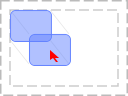
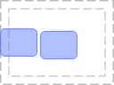
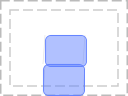
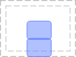
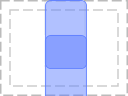
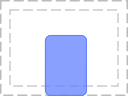
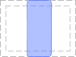
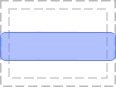

Module awful.placement
Algorithms used to place various drawables.
The functions provided by this module all follow the same arguments conventions. This allow:
- To use them in various other module as visitor objects
- Turn each function into an API with various common customization parameters.
- Re-use the same functions for the mouse, clients, screens and wiboxes
### Common arguments
honor_workarea (boolean):
Take workarea into account when placing the drawable (default: false)
honor_padding (boolean):
Take the screen padding into account (see screen.padding)
tag (tag):
Use a tag geometry
margins (number or table):
A table with left, right, top, bottom keys or a number
parent (client, wibox, mouse or screen):
A parent drawable to use a base geometry
bounding_rect (table):
A bounding rectangle
attach (boolean):
When either the parent or the screen geometry change, call the placement function again.
update_workarea (boolean):
If attach is true, also update the screen workarea.
Info:
- Copyright: 2008 Julien Danjou, Emmanuel Lepage Vallee 2016
- Release: master-gbc2ddfe
- Author: Emmanuel Lepage Vallee <elv1313@gmail.com>,Julien Danjou <julien@danjou.info>
Functions
| closest_corner ([d=client.focus[, args={}]]) | Move a drawable to the closest corner of the parent geometry (such as the screen). |
| no_offscreen (c[, screen=client's screen]) | Place the client so no part of it will be outside the screen (workarea). |
| no_overlap (c) | Place the client where there’s place available with minimum overlap. |
| under_mouse (c) | Place the client under the mouse. |
| next_to_mouse ([c=focused[, offset=apply_dpi(5)]]) | Place the client next to the mouse. |
| align (d[, args={}]) | Move the drawable (client or wibox) d to a screen position or side. |
| top_left (d[, args={}]) | Align a client to the top left of the parent area. |
| top_right (d[, args={}]) | Align a client to the top right of the parent area. |
| bottom_left (d[, args={}]) | Align a client to the bottom left of the parent area. |
| bottom_right (d[, args={}]) | Align a client to the bottom right of the parent area. |
| left (d[, args={}]) | Align a client to the left of the parent area. |
| right (d[, args={}]) | Align a client to the right of the parent area. |
| top (d[, args={}]) | Align a client to the top of the parent area. |
| bottom (d[, args={}]) | Align a client to the bottom of the parent area. |
| centered (d[, args={}]) | Align a client to the center of the parent area. |
| center_vertical (d[, args={}]) | Align a client to the vertical center of the parent area. |
| center_horizontal (d[, args={}]) | Align a client to the horizontal center left of the parent area. |
| stretch ([d=client.focus[, args={}]]) | Stretch a drawable in a specific direction. |
| stretch_left (d[, args={}]) | Stretch the drawable to the left of the parent area. |
| stretch_right (d[, args={}]) | Stretch the drawable to the right of the parent area. |
| stretch_up (d[, args={}]) | Stretch the drawable to the top of the parent area. |
| stretch_down (d[, args={}]) | Stretch the drawable to the bottom of the parent area. |
| maximize ([d=client.focus[, args={}]]) | Maximize a drawable horizontally, vertically or both. |
| maximize_vertically (d[, args={}]) | Vetically maximize the drawable in the parent area. |
| maximize_horizontally (d[, args={}]) | Horizontally maximize the drawable in the parent area. |
Functions
- closest_corner ([d=client.focus[, args={}]])
-
Move a drawable to the closest corner of the parent geometry (such as the screen).
Valid arguments include the common ones and:
- include_sides: Also include the left, right, top and bottom positions

Usage example output:
Closest corner: bottom_right- d drawable A drawable (like client, mouse or wibox) (default client.focus)
- args table The arguments (default {})
Returns:
-
string
The corner name
Usage:
-- Move the mouse to the closest corner of the focused client awful.placement.closest_corner(mouse, {include_sides=true, parent=c}) -- It is possible to emulate the mouse API to get the closest corner of -- random area local corner = awful.placement.closest_corner( {coords=function() return {x = 100, y=100} end}, {include_sides = true, bounding_rect = {x=0, y=0, width=200, height=200}} ) print('Closest corner:', corner)
- no_offscreen (c[, screen=client's screen])
-
Place the client so no part of it will be outside the screen (workarea).

Usage example output:
Before: x=-30, y=-30, width=100, height=100 After: x=10, y=10, width=100, height=100- c client.object The client.
- screen integer The screen. (default client's screen)
Returns:
-
table
The new client geometry.
Usage:
awful.placement.no_offscreen(c)--, {honor_workarea=true, margins=40}) - no_overlap (c)
-
Place the client where there’s place available with minimum overlap.

- c The client.
Usage:
awful.placement.no_overlap(client.focus) local x,y = screen[4].geometry.x, screen[4].geometry.y
- under_mouse (c)
-
Place the client under the mouse.

- c The client.
Returns:
-
The new client geometry.
Usage:
awful.placement.under_mouse(client.focus)
- next_to_mouse ([c=focused[, offset=apply_dpi(5)]])
-
Place the client next to the mouse.
It will place
cnext to the mouse pointer, trying the following positions in this order: right, left, above and below.
- c client.object The client. (default focused)
- offset integer The offset from the mouse position. (default apply_dpi(5))
Returns:
-
The new client geometry.
Usage:
awful.placement.next_to_mouse(client.focus)
- align (d[, args={}])
-
Move the drawable (client or wibox)
dto a screen position or side.Supported args.positions are:
- top_left
- top_right
- bottom_left
- bottom_right
- left
- right
- top
- bottom
- centered
- center_vertical
- center_horizontal

- top_left (d[, args={}])
-
Align a client to the top left of the parent area.

Usage:
awful.placement.top_left(client.focus)
- top_right (d[, args={}])
-
Align a client to the top right of the parent area.

Usage:
awful.placement.top_right(client.focus)
- bottom_left (d[, args={}])
-
Align a client to the bottom left of the parent area.

Usage:
awful.placement.bottom_left(client.focus)
- bottom_right (d[, args={}])
-
Align a client to the bottom right of the parent area.

Usage:
awful.placement.bottom_right(client.focus)
- left (d[, args={}])
-
Align a client to the left of the parent area.

Usage:
awful.placement.left(client.focus)
- right (d[, args={}])
-
Align a client to the right of the parent area.
Usage:
awful.placement.right(client.focus)
- top (d[, args={}])
-
Align a client to the top of the parent area.

Usage:
awful.placement.top(client.focus)
- bottom (d[, args={}])
-
Align a client to the bottom of the parent area.

Usage:
awful.placement.bottom(client.focus)
- centered (d[, args={}])
-
Align a client to the center of the parent area.
Usage:
awful.placement.centered(client.focus)
- center_vertical (d[, args={}])
-
Align a client to the vertical center of the parent area.

Usage:
awful.placement.center_vertical(client.focus) print('\n\n\n\n', c.y, c.height, screen[1].geometry.height/2-30/2)--FIXME
- center_horizontal (d[, args={}])
-
Align a client to the horizontal center left of the parent area.
Usage:
awful.placement.center_horizontal(client.focus)
- stretch ([d=client.focus[, args={}]])
-
Stretch a drawable in a specific direction.
Valid args:
- direction: The stretch direction (left, right, up, down) or a table with multiple directions.

- stretch_left (d[, args={}])
-
Stretch the drawable to the left of the parent area.

Usage:
placement.stretch_left(client.focus)
- stretch_right (d[, args={}])
-
Stretch the drawable to the right of the parent area.
Usage:
placement.stretch_right(client.focus)
- stretch_up (d[, args={}])
-
Stretch the drawable to the top of the parent area.

Usage example output:
65Usage:
placement.stretch_up(client.focus) print(c.height) - stretch_down (d[, args={}])
-
Stretch the drawable to the bottom of the parent area.

Usage:
placement.stretch_down(client.focus)
- maximize ([d=client.focus[, args={}]])
-
Maximize a drawable horizontally, vertically or both.
Valid args:
- axis:The axis (vertical or horizontal). If none is specified, then the drawable will be maximized on both axis.

- maximize_vertically (d[, args={}])
-
Vetically maximize the drawable in the parent area.

Usage:
placement.maximize_vertically(c)
- maximize_horizontally (d[, args={}])
-
Horizontally maximize the drawable in the parent area.

Usage:
placement.maximize_horizontally(c)